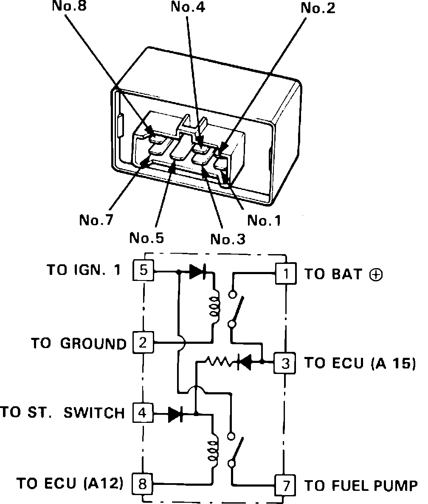
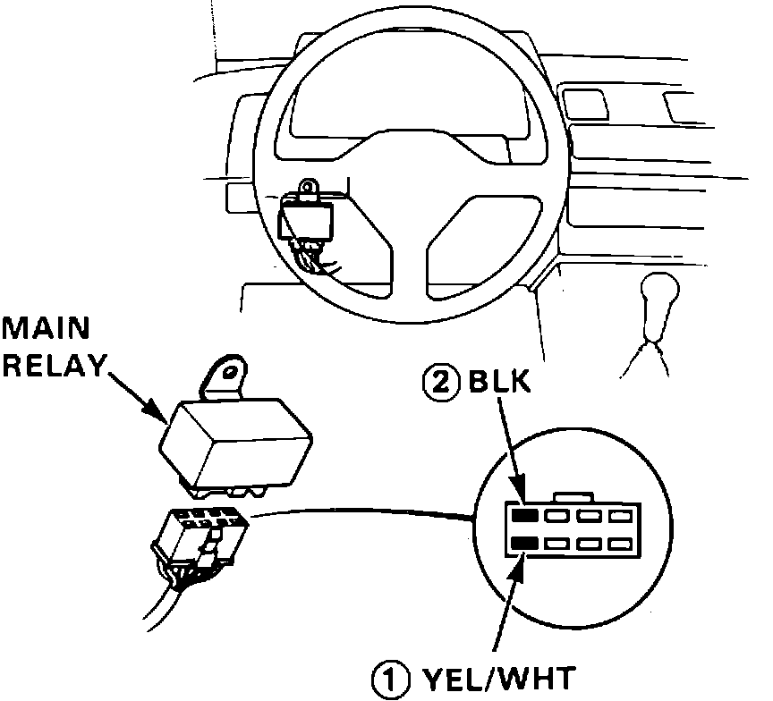
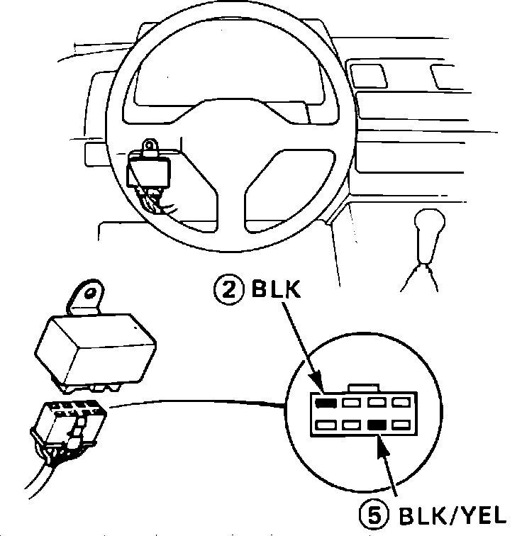
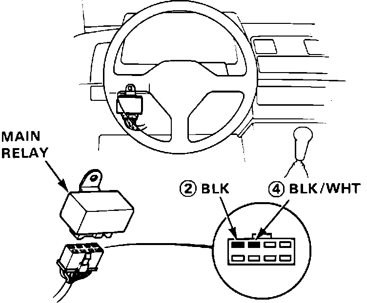
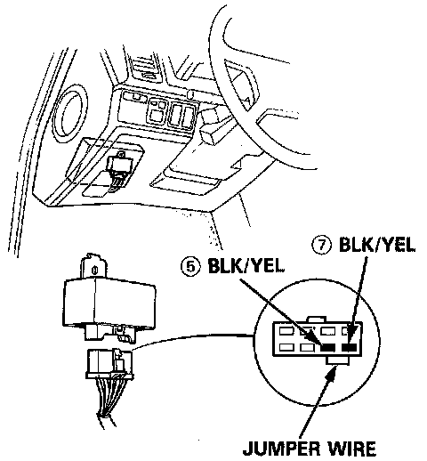

Main Relay (Computer/Fuel System): Testing and Inspection
Main Relay Terminal Identification:

Relay Test
1. Remove the main relay, located near the under-dash fuse box.
2. Apply battery voltage to relay terminal 4 and ground to terminal 8. Check for continuity between terminal 5 and terminal 7 of the main relay.
3. If there is continuity, proceed to step 4. If there is no continuity, replace the relay and retest.
4. Apply battery voltage to terminal 5 and ground to terminal 7 of the main relay. Check that there is continuity between terminal 1 and terminal 3 of the main relay.
5. If there is continuity, proceed to step 6. If there is no continuity, replace relay and retest.
6. Apply battery voltage to terminal 3 and terminal 8 of the main relay. Check for continuity between terminal 5 and terminal 7 of the main relay.
7. If continuity exists then relay is okay. If the fuel pump still does not function proceed to the harness test.
8. If there is no continuity, replace relay and retest.
Harness Test
1. Keep the ignition switch in the OFF position and disconnect the main relay harness connector.
2. Check for continuity between the BLK wire (2) and ground. If continuity exists, proceed to step 3. If continuity does not exist repair open circuit in the BLK wire and retest.
Main Relay Testing:

3. Attach positive probe of voltmeter to YEL/BLK wire (1) and negative probe to the BLK (2) wire. Check for battery voltage.
4. If battery voltage exists, proceed to step 5. If battery voltage does not exist, check the wiring between the battery and the main relay along with the ECU fuse (15A) in the underhood relay box.
Main Relay Testing:

5. Attach positive probe to the BLK/YEL wire (5) and the negative probe to the BLK wire (2).
6. Turn the ignition switch to the ON position. Check for battery voltage.
7. If battery voltage exists, proceed to step 8. If battery voltage does not exist, check the wiring from the ignition switch and the main relay along with the No.9 (10A) fuse.
Main Relay Harness Testing:

8. Attach positive probe to the BLK/WHT wire (4) and the negative probe to the BLK (2) wire.
9. Turn the ignition switch to the START position. Check for battery voltage.
10. If battery voltage exists, proceed to step 11. If battery voltage does not exist, check the wiring between the ignition switch and the main relay along with the No.13 (7.5A) fuse.
Jump Wires 5 And 7:

11. Connect a jumper wire between the two BLK/YEL wires (5) and (7).
12. Turn the ignition switch to the ON position. Check for fuel pump operation.
13. If fuel pump works, harness is okay. If the fuel pump does not work, check the wiring between the main relay and the fuel pump along with the wiring from the fuel pump to the ground (BLK) wire.